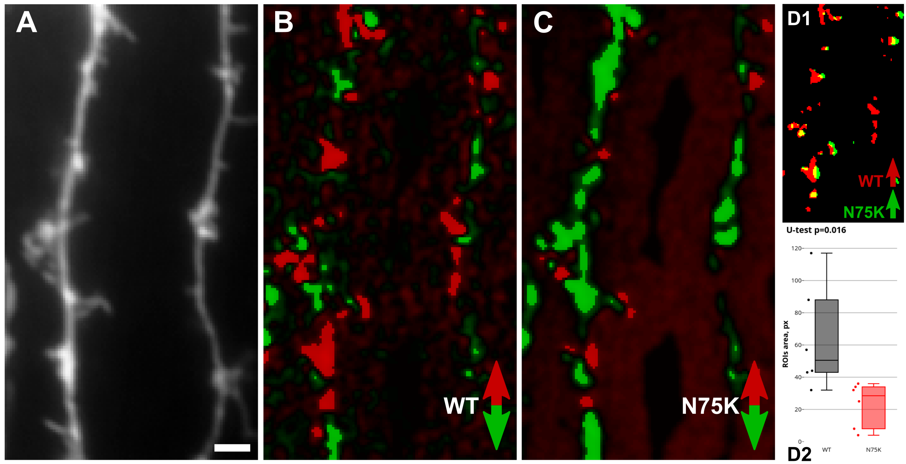

Red-Green Detection
Based on Dovgan et al., 2010, Osypenko et al., 2019
Detecting and Comparing Translocations in Two NCSs
 A - wide-field image of EYFP channel, B - differential image for wild-type NCS channel, C - differential image for mutant NCS channel, D1 - insertions mask overlay, D2 - insertions regions area comparison